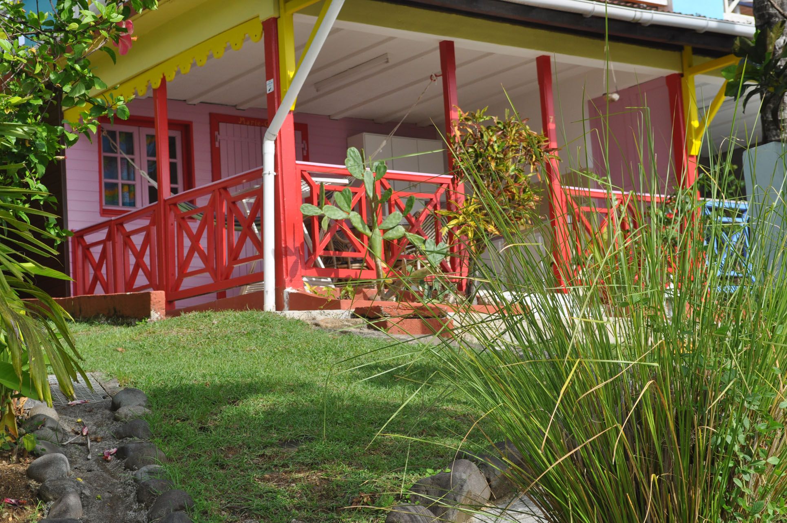

<html><!DOCTYPE html PUBLIC "-//W3C//DTD XHTML 1.0 Transitional//EN" "http://www.w3.org/TR/xhtml1/DTD/xhtml1-transitional.dtd"></html>
<head>
<script>
  (function(i,s,o,g,r,a,m){i['GoogleAnalyticsObject']=r;i[r]=i[r]||function(){
  (i[r].q=i[r].q||[]).push(arguments)},i[r].l=1*new Date();a=s.createElement(o),
  m=s.getElementsByTagName(o)[0];a.async=1;a.src=g;m.parentNode.insertBefore(a,m)
  })(window,document,'script','//www.google-analytics.com/analytics.js','ga');

  ga('create', 'UA-24336933-1', 'nidtropical.com');
  ga('send', 'pageview');

</script>
<meta name="identifier-url" content="http://www.nidtropical.com" />
<meta http-equiv="Content-Type" content="text/html; charset=iso-8859-1" />
<meta http-equiv="content-language" content="FR" />
	<title>Location Bungalow Guadeloupe : Bungalow climatisé avec piscine, Nid Tropical Bungalow avec vue mer !</title>
	<meta name="description" content="Location gite bungalow Guadeloupe, gite bungalow avec piscine Guadeloupe, vue mer exceptionnelle ! Location gite bungalows bois en Guadeloupe à des tarifs compétitifs"/> 
	<meta name="keywords" content="bungalow Guadeloupe, bungalows guadeloupe, bungalow créole, bungalow piscine guadeloupe, location bungalow guadeloupe,  bungalow climatisé, location vacances bungalow, séjour bungalow malendure, bungalows malendure, bungalow réserve pigeon,  bungalow piscine malendure pigeon"/>
<meta name="author" content="location tourisme vacances en Guadeloupe" />
<meta name="copyright" content=www.nidtropical.com/>
<meta NAME="ROBOTS" CONTENT="index, follow, noydir, noodp, all" />

	<link rel="stylesheet" type="text/css" href="/en/css/main.css" media="all" />
    <style type="text/css">
<!--
.Style1 {
	color: #0000A0;
	font-style: italic;
	font-weight: bold;
	font-size: 14px;
}
.Style2 {
	color: #000000;
	font-weight: bold;
}
.Style3 {color: #000000}
.Style4 {
	font-size: 14;
	font-weight: bold;
	color: #000000;
}
.Style5 {
	font-size: 14px;
	font-weight: bold;
}
.Style6 {font-weight: bold}
.Style8 {color: #000000; font-weight: bold; font-style: italic; }
-->
    </style>
</head>
<body>

<div class="main">
<table class="main-content" align="center">
<tr>
	<td class="header" colspan="2">
		<!-- En-tête de la page : Début-->
		
		<div class="langue">
			<a href="http://www.en.nidtropical.com/location-bungalows-guadeloupe.html"></a>
		</div>
		
		<div class="logo">
			<div style="visibility: hidden; display: none;">
				Le nid tropical - Location Bungalows, Gîte, Vacances en Guadeloupe.
			</div>
			Morne TARARE - 97125 BOUILLANTE <br/>
			Tél./Fax : 05 90 98 72 05 - Mobile : 06 90 40 63 48 
		</div>
		
		<div class="courrier">
			<div><strong>cliquez ici --> :</strong>
				<a href="mailto:gite@nidtropical.com" class="Style5">gite@nidtropical.com</a>
			</div>
			<div class="Style1">			  <u>BUNGALOW GUADELOUPE</u>			</div>
		</div>
		
		<!-- En-tête de la page : Fin-->
	</td>
</tr>
<tr>
	<td width="191" class="menu">
		<!-- Menu de la page : Début -->
		
		<ul>
			<li>
				<a href="http://www.nidtropical.com/" title="gîte guadeloupe" class="accueil">Accueil</a>
			</li>
			<li>
				<a href="http://www.nidtropical.com/voyage-pas-cher-en-guadeloupe.html" title="bungalow guadeloupe" class="tarif">Tarif</a>
			</li>
			<li>
				<a href="http://www.nidtropical.com/location-gites-en-guadeloupe.html" title="hebergement guadeloupe" class="photo">Photos</a>
			</li>
			<li>
				<a href="http://www.nidtropical.com/location-bungalow-guadeloupe.html" title="sejour guadeloupe" class="plan">Plan</a>
			</li>
			<li>
				<a href="http://www.nidtropical.com/location-vacances-bouillante.html" title="vacances guadeloupe" class="trajet">Trajet</a>
			</li>
			<li>
				<a href="http://www.nidtropical.com/partenaires.html" title="plongee guadeloupe" class="partenaire">Partenaires</a>
			</li>
			<li>
				<a href="http://www.nidtropical.com/plongee-malendure.html" title="gite bungalows guadeloupe" class="detail">Detail</a>
			</li>
			<li>
				<a href="http://www.nidtropical.com/location-appartements-guadeloupe.html" title="location appartement guadeloupe" class="appartement">Appartement</a>
			</li>
		</ul>
		
		<!-- Menu de la page : Fin -->
	</td>
	<td width="947" class="texte">
		<!-- Contenu de la page : Début -->

       
			<h1> Location de gite Bungalow avec piscine à Bouillante, Guadeloupe</h1>
		        <p>Vous avez des milliers de raison de venir  passer vos vacances au gite le <strong> <a href="http://www.nidtropical.com/" title="Gîtes Guadeloupe Bouillante" class="Style3">Nid Tropical ! </a></strong> : Location de bungalows  avec piscine à Bouillante afin de <a href="http://www.nidtropical.com/sejour-en-guadeloupe.html" title="séjour aux Antilles" class="Style2">visiter la Guadeloupe </a>. Les carnavals qui défilent dans toutes les communes de Guadeloupe, les compétitons sportives de Jet-Ski ou de cyclisme ou bien la fête du crabe et les fêtes des cuisinières, la <a href="http://www.nidtropical.com/plongee-bouillante.html" title="sejour plongée" class="Style2">plongée à Bouillante Malendure</a>, les plages idylliques, les randonnées, les chutes du Carbet, la Soufrière, sa forêt tropicale, ses plages idylliques, la culture antillaise, etc... </p>
		        <p>Choisissez la location d'un gite bungalow créole, avec piscine et vue à vous couper le souffle sur les îlets Pigeon et la réserve Cousteau pour votre séjour en Guadeloupe !</p>
		        <p>Le gite bungalow Nid Tropical vous offre des solutions avantageuses et confortables d'<a href="http://www.nidtropical.com/hebergement-en-guadeloupe.html" title="hebergement guadeloupe" class="Style3"><strong>hébergement en gite bungalow Guadeloupe </strong></a> : </p>
                <p> - un gite bungalow créole bois à brasseur d'air et clim mobile d'appoint de 2 ou 3 personnes, chambre avec un lit de 2 personnes et un lit d'une personne avec moustiquaires, salle d'eau WC et une cuisine accueillante et bien équipée : mini-four, grille-pain, plaques de cuisson gaz, frigo-congélateur sur terrasse avec coin repas et hamac pour la sieste !</p>
                <p></p>
<p>- location de gite bungalows climatisés en Guadeloupe, sous le carbet, pour 2 à 4 personnes, chambre de 37 m², lit à baldaquin de 2 personnes et 2 lits superposés avec moustiquaires, et bien sûr, avec salle d'eau WC et cuisine tout aussi confortable et équipée, avec coin repas et  hamac sur terrasse ! </p>
<p></p>
		        <div>
	  <div style="float: left; margin-left: 20px;">
				
			</div>
			<div style="float: left; margin-left: 20px;">
				
			</div>
			<div style="float: left; margin-left: 20px;">
				
			</div>
			<div style="float: left; margin-left: 20px;">
				
			</div>
			<div style="float: left; margin-left: 20px;">
	         			
			</div>
		
		<div style="clear: both;">
		<div>
		  <p>&nbsp;</p>
		  <h4 class="body">Une offre spéciale !  location d'un "Patch", ce sont 2 bungalows jumelés.</h4>
		  <p></p>
		   Sylvie et Jean Pierre vous proposent cette formule avantageuse d'hébergement pour vos vacances en famille ou entre amis : La <span class="texte Style3"><cod4><a href="http://www.nidtropical.com/voyage-pas-cher-en-guadeloupe.html" title="Vacances pas cher en Guadeloupe" class="Style4">formule gite bungalow "Patch" </a></cod4>   : 2 bungalows créoles côte à côte,  avec brasseurs d'air et clim d'appoint! </div>
		<p>Location gite bungalow en Guadeloupe : la formule <cod4><a href="http://www.nidtropical.com/location-bungalows-bouillante.html" title="sejour bungalow guadeloupe" class="Style8">gite bungalow climatisé sous le carbet</a></cod4> peuvent être communiquant par la terrasse à votre demande!         
		<p>Lors de votre location gite bungalows en Guadeloupe,  il n'y a pas de supplément adultes et enfants ! 
		<p>L'emplacement de notre gîte de location de bungalow  en Guadeloupe vous donne la possibilité de fréquenter les petits restaurants créoles et autres, à 300m du gite bungalow Nid Tropical, vous pouvez y aller quand vous le souhaitez pendant votre <cod4>séjour aux Antilles </cod4>! 
		<p><em>De plus vous avez à votre disposition un lave-linge sous le carbet devant vos bungalows !</em> Nous demandons une participation de 2€ par utilisation, lessive non comprise. Un étendoir est prévu pour votre linge sur la propriété.         
		<p>Location de bungalows Guadeloupe : comment réserver mon bungalow climatisé ou bungalow créole à brasseur d'air ?		
		<p>Pour réserver, un mail de confirmation, un acompte sous huitaine de 30%  en chèque, paiement CB, ou ANCV accompagné de votre contrat (contrat à télécharger à la page tarif du site), le solde minimum 30 jours avant votre arrivée. Si votre réservation se fait au cours du mois de votre arrivée vous devez la totalité.
		<p>Location gite bungalows en Guadeloupe : moyens de paiement ?
		<p>Paiements acceptés pour vos bungalows : Chèque, CB, espèces, chèques vacances ANCV. Dépot de garantie de 200 € à votre arrivée.</div>
		
		<div style="margin-top: 20px;">
			<div style="float: left; margin-left: 20px;">
				 
			</div>
			<div style="float: left; margin-left: 20px;">
				
			</div>
		</div>
		
		<div style="clear: both;">
		</div>
		
		<div class="texte">
			Coucher de soleil vu du Carbet et des bungalows du gite bugalow Nid Tropical</div>
	
		<strong>
		<!-- Contenu de la page : Fin -->
	    </strong>	</td>
</tr>
<tr>
	<td height="62" colspan="2" class="footer">
		<!-- Bas de page : Début-->

		<div>		
			<p><a href="http://www.nidtropical.com/plan-du-site.html" title="Location vacances Bouillante">PLAN DU SITE</a></p>
			<p>SCI LE NID TROPICAL - <strong>Hébergement gîtes bungalows Bouillante Malendure</strong>			- 
			  <strong>Location de Bungalow et de Gite pour Vacances en Guadeloupe</strong>. <br/>
			<i>Adresse : </i> Morne TARARE - 97125 BOUILLANTE - GUADELOUPE
			-
			<i>Tél./Fax : </i>05 90 98 72 05
			- 
			<i>Mobile : </i>06 90 40 63 48
			-
			http://www.nidtropical.com - <i>Mail : </i><a href="mailto:gite@nidtropical.com">gite@nidtropical.com</a>
          </p>
		</div>
		
		<!-- Bas de page : Fin-->
	</td>
</tr>
</table>
</div>

</body>
</html>